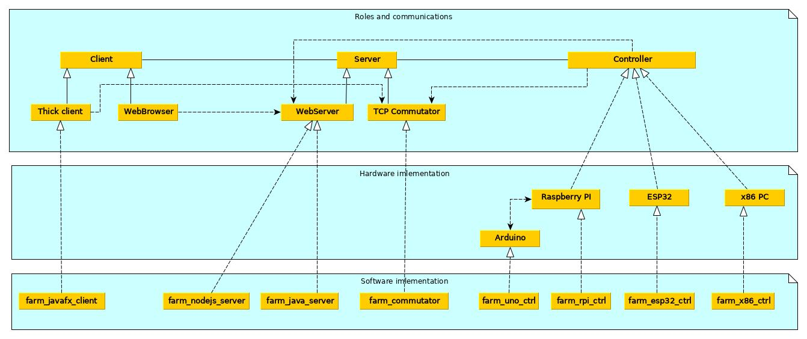
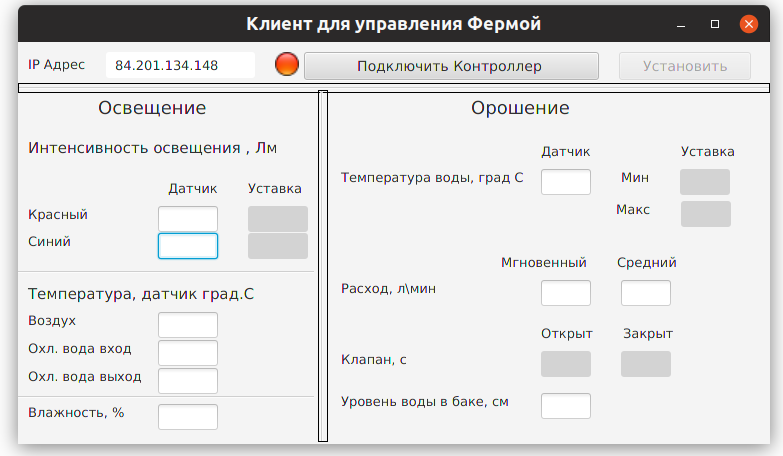
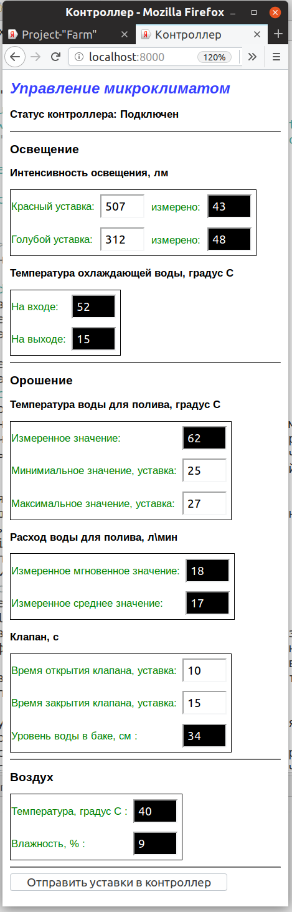

Цель проекта
Демонстрация рабочего ПО для управления климатом в теплице для сбора требований под конкретного заказчика. Ограничение данного ПО только в том, что микроконтроллер ESP32 или Arduino UNO эмулирует работу с датчиками и испольнительными устройствами. Данные от датчиков генерируется в программе. Могу разработать ПО под ваш конкретный объект управления или устройство.
Диаграмма компонентов проекта
Описание компонентов
Controller
Осуществляет управление исполнительными механизмами,осуществляющими орошение, отопление, освещение. собирает информацию с датчиков, необходимую для функций управления. Работает автономно по сценарию заданному клиентом. При наличии соединения с интернетом регулярно обновляет на сервере текущие значения датчиков и свои настройки сценария. Контроллеров может быть несколько. Контроллер может быть реализован на разных аппаратных платформах, в этом проекте в качестве примера реализовано на:
- модуле с ESP32 - самый дешевый вариант порядка $10. Требуется точка доступа WIFI или телефон для доступа в интернет.
- микрокомпьютере Rasberry PI с подключенным к нему по интерфейсу UART модулем Arduino UNO - вариант порядка $30-50. Требуется точка доступа LAN для доступа в интернет по кабелю.
- персональном компьютере под Linux с подключенным к нему по интерфейсу UART модулем Arduino UNO - вариант для отладки системы.
Server
Расположен на публично доступном ресурсе в интернете, например на вашем VDS. Предоставляет клиенту информацию о наличии соединения с контроллером, текущем значении датчиков и заданных параметров для исполнительных механизмов. Может обслуживать несколько клиентов и контроллеров. Демонстрируются варианты:
- WebServer на основе Node.js. Cерверное приложение написано на языке JavaScript. Контроллеры подключаются по протоколу TCP к порту 8080. Браузер подключается к порту 8000. При получении данных от клиента, браузер уведомляется по websocket.
- Сервер представляет из себя коммутатор двух TCP соединений: клиент-сервер (порт 5025), сервер-контроллер(порт 8080). Этот подход предназначен для использования "толстого клиента", написанного на JavaFX, по протоколу TCP. При наличии обоих TCP подключений к Серверу, он транслирует данные принятые от клиента к контроллеру и в обратную сторону. Коммутатор написан на С++ и будет работать только под Линуксом.
- Существует экспериментальная реализация WebServer на чистой JavaSE без использования сторонних библиотек, если нужно серверное приложение на Java и нет желания использовать Tomcat и т.п. На данный момент она не рабочая, так как в ней не реализована поддержка websocket.
Client
При наличии соединения с интернетом подключается к Серверу и предоставляет интерфейс для управления и получения информации о работе системы. Демонстрируется два возможных подхода: подключиться браузером к серверу по протоколу HTTP, или использовать специальный "толстый клиент", написанный на JavaFX, по протоколу TCP. В первом случае удобно, что можно использовать практически любое устройство на котором есть браузер. Во втором случае преимущество в том, что потенциально можно интегрироваться с какой либо локальной системой пользователя. JavaFX клиент для работы требует установки JRE версии старше 1.8.102 и будет работать под Linux, Windows. К Серверу может подключаться несколько клиентов.
Получение исполняемых файлов ПО, сборка, установка, запуск
farm_javafx_client
"Толстый клиент" для управления Контроллером по протоколу TCP. Исполняемый jar файл находится в каталоге farm/client/thick_client/farm_javafx_client/ Для запуска под JRE 1.8 используйте команду в консоле:
$ java -jar farm_javafx_client.jarДля запуска под JRE 11 надо дополнительно установить отдельно javafx-sdk, при запуске указать к ней путь в вашем случае:
$ java -jar --module-path /home/user/bin/javafx-sdk-11.0.2/lib --add-modules=javafx.controls,javafx.fxml farm_javafx_client.jarДля сборки из исходного кода импортируйте проект в Eclipse IDE for Java SE developers и запускайте проект оттуда. Если у вас версия JRE 11 и выше в настройках run_configurations -> Arguments -> VM Arguments укажите:
--module-path /home/user/bin/javafx-sdk-11.0.2/lib --add-modules=javafx.controls,javafx.fxml
farm_commutator
Коммутатор двух TCP соединений: клиент-сервер, сервер-контроллер. Исполняемый файл farm_commutator находится в каталоге farm/server/tcp_commutator/farm_commutator/ его необходимо скопировать например на свой VDS и запустить его там:
$ scp farm_commutator user@ip_вашего_VDS:/home/user
$ ssh user@ip_вашего_VDS '/home/user/farm_commutator &'Для сборки из исходного кода импортируйте проект в Eclipse IDE for C/C++ developers и собирайте проект оттуда. В проекте есть сборка через CMake, для этого запустите скрипт build_x86-64.sh исполняемый файл появится в каталоге bin/
farm_nodejs_server
Скопируйте все содержимое папки farm/server/web_server/farm_nodejs_server/ например на свой VDS. Установите Node.js c его сайта. Войдите в каталог с проектом на вашем VDS и запустите:
$ cd ~/bin/farm_nodejs_server
$ node farm.js &
farm_rpi_ctrl
Контроллер на платформе RaspberryPI. Исполняемый файл farm_rpi_ctrl находится в каталоге farm/controller/raspberry_pi/farm_rpi_ctrl/
его необходимо скопировать на RaspberryPI и запустить его там.
Для сборки из исходного кода импортируйте проект в Eclipse IDE for C/C++ developers и собирайте проект оттуда.
В проекте есть сборка через CMake, для этого запустите скрипт build_pi.sh исполняемый файл появится в каталоге bin/
Для отладки можно собрать проект для работы на ПК для этого запустите скрипт build_x86-64.sh
farm_esp32_ctrl
В каталоге находится проект для Arduino IDE. Откройте его командой Файл->Открыть... В файле найдите строчку "customize this section". Поставьте фактическое значение для трех параметров: имя точки доступа, пароль, IP адрес сервера VDS Загрузите проект в подключенную плату ESP32.
farm_x86_ctrl
Эмулятор контроллера на ПК. Исполняемый файл farm_x86_ctrl находится в каталоге farm/controller/x86_pc/farm_x86_ctrl/ Запустите эмулятор на ПК:
$ cd farm/farm_x86_ctr
$ ./farm_x86_ctr
farm_uno_ctrl
В каталоге находится проект для Arduino IDE. Откройте его командой Файл->Открыть... Загрузите проект в подключенную плату UNO.
Скриншоты
Вид приложения farm_javafx_client
Вид приложения в Браузере - ориентация на телефон в портретном режиме
Лицензия MIT
Copyright (c) 2020 by sda1969Данная лицензия разрешает лицам, получившим копию данного программного обеспечения и сопутствующей документации (в дальнейшем именуемыми «Программное обеспечение»), безвозмездно использовать Программное обеспечение без ограничений, включая неограниченное право на использование, копирование, изменение, слияние, публикацию, распространение, сублицензирование и/или продажу копий Программного обеспечения, а также лицам, которым предоставляется данное Программное обеспечение, при соблюдении следующих условий:
Указанное выше уведомление об авторском праве и данные условия должны быть включены во все копии или значимые части данного Программного обеспечения.
ДАННОЕ ПРОГРАММНОЕ ОБЕСПЕЧЕНИЕ ПРЕДОСТАВЛЯЕТСЯ «КАК ЕСТЬ», БЕЗ КАКИХ-ЛИБО ГАРАНТИЙ, ЯВНО ВЫРАЖЕННЫХ ИЛИ ПОДРАЗУМЕВАЕМЫХ, ВКЛЮЧАЯ ГАРАНТИИ ТОВАРНОЙ ПРИГОДНОСТИ, СООТВЕТСТВИЯ ПО ЕГО КОНКРЕТНОМУ НАЗНАЧЕНИЮ И ОТСУТСТВИЯ НАРУШЕНИЙ, НО НЕ ОГРАНИЧИВАЯСЬ ИМИ. НИ В КАКОМ СЛУЧАЕ АВТОРЫ ИЛИ ПРАВООБЛАДАТЕЛИ НЕ НЕСУТ ОТВЕТСТВЕННОСТИ ПО КАКИМ-ЛИБО ИСКАМ, ЗА УЩЕРБ ИЛИ ПО ИНЫМ ТРЕБОВАНИЯМ, В ТОМ ЧИСЛЕ, ПРИ ДЕЙСТВИИ КОНТРАКТА, ДЕЛИКТЕ ИЛИ ИНОЙ СИТУАЦИИ, ВОЗНИКШИМ ИЗ-ЗА ИСПОЛЬЗОВАНИЯ ПРОГРАММНОГО ОБЕСПЕЧЕНИЯ ИЛИ ИНЫХ ДЕЙСТВИЙ С ПРОГРАММНЫМ ОБЕСПЕЧЕНИЕМ.